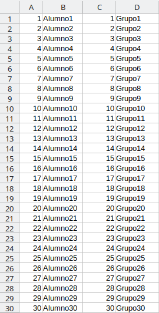
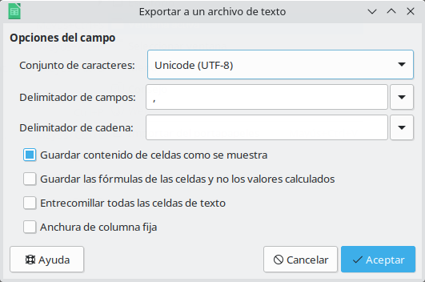
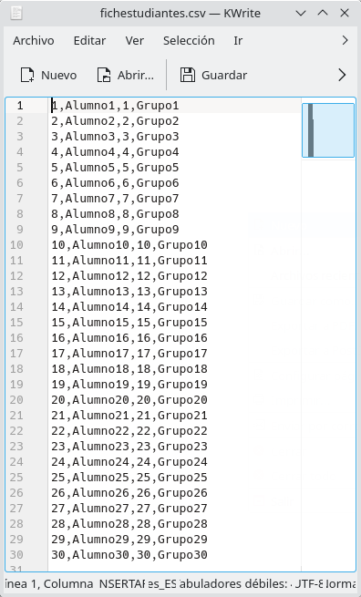

Actividad 1 - Práctica no evaluable
Nota
Estas actividades son opcionales y no evaluables pero es recomendable hacerlas para un mejor aprendizaje de la asignatura.
Vamos a utilizar la aplicación SQLite debido a su sencillez y facilidad de uso. El objetivo es realizar una toma de contacto con las bases de datos de la forma más sencilla e intuitiva posible.
Si buscas las soluciones por Internet o preguntas al oráculo de ChatGPT, te estarás engañando a ti mismo. Ten en cuenta que ChatGPT no es infalible ni todopoderoso.
Es una gran herramienta para agilizar el trabajo una vez se domina una materia, pero usarlo como atajo en el momento de adquirir habilidades y conocimientos básicos perjudica gravemente tu aprendizaje. Si lo utilizas para obtener soluciones o asesoramiento respecto a las tuyas, revisa cuidadosamente las soluciones propuestas igualmente. Intenta resolver las actividades utilizando los recursos que hemos visto y la documentación extendida que encontrarás en el temario.
1. Crear una BD sencilla (guiado)
¿En qué consiste esta actividad?
Como vimos en la teoría, los datos se pueden almacenar en muchos formatos, siendo los ficheros, las hojas de cálculo y las bases de datos los más comunes.
Existen muchas empresas que empiezan usando hojas de calculo como medio de almacenamiento de la información y posteriormente, cuando el volumen de información o la complejidad de los datos crece, necesitan diseñar una base de datos y exportar los datos.
En esta actividad crearemos, de manera guiada, una serie de datos en una hoja de cálculo que "copiaremos" a una base de datos sencilla creada con SQLite.
Seguiremos estos pasos:
- Utilizar una hoja de cálculo para clasificar una serie de datos en columnas.
- Exportar esa hoja de cálculo a un fichero de texto con separador entre columnas (este fichero se llama fichero CSV).
- Importar los datos desde ese fichero CSV a una base de datos de tipo SQLite.
- Mostrar los datos obtenidos en la base de datos.
Los ficheros CSV (del inglés Comma-Separated Values), se emplean muy a menudo para hacer copias de seguridad de los datos. Más información aquí.
2. Software necesario
El software que vamos a usar es multiplataforma y libre.
1) SQLite.
- Pasos instalación Linux/Windows:
- https://codigofacilito.com/articulos/configurando-sqlite.
- Recuerda agregar la carpeta al PATH del sistema (solo Windows).
- Pasos instalación Mac: viene preinstalado por defecto.
Se recomienda instalar el paquete entero de LibreOffice.
Como hemos visto en el temario, SQLite es una base de datos portable; es decir, que te la puedes llevar donde quieras simplemente copiando el archivo/fichero físico donde se aloja. Se recomienda que crees una carpeta de trabajo donde almacenarás todos los datos, por ejemplo: BD.UD1.
3. Crear la hoja de cálculo
Si pensamos en un Centro de Estudios que tiene información de profesores, estudiantes, notas, etc., estaríamos hablando de una "futura" base de datos (la del centro de estudios) que contiene varias tablas (profesores, estudiantes, notas, etc.). En este caso, con esta hoja de cálculo, estamos introduciendo los datos de la "futura tabla" de estudiantes.
Crearemos los datos por columnas según se muestran con LibreOffice Calc que serían los datos de los estudiantes. Para introducir los datos usaremos un método sencillo (puesto que es un ejemplo docente): basta con rellenar la primera fila de datos y luego utilizar la función autocompletar de Calc; es decir, nos situamos sobre la esquina inferior derecha de una celda y, cuando aparezca una flecha negra, con el ratón arrastramos hacia abajo. En total crearemos 30 alumnos (30 filas).
¿Por qué no rellenamos la fila 1 con los títulos de las columnas NIE, nombre, edad y grupo? Porque SQLite importa los datos sin tener en cuenta la fila de títulos y lo crearía como una fila de datos más.
Por ejemplo:

Ahora, se exportará desde el menú Archivo → Guardar Como → Texto CSV y le pondremos el nombre de "fichestudiantes.csv" indicando que el separador es la coma como indica la captura siguiente:

Atención
Recuerda grabar ese fichero en tu carpeta de trabajo (BD.UD1). Si cometes algún error y no puedes seguir, simplemente vacía esa carpeta y empieza de nuevo.
Comprobaremos que el contenido del fichero CSV obtenido es el esperado con el editor de textos por defecto (por ejemplo Pluma, Gedit, KWrite o similar en Linux, o Bloc de notas en Windows).

4. Crear la base de datos
- Ve a la carpeta de trabajo (BD.UD1) y comprueba que está dentro de dicha carpeta el fichero CSV generado anteriormente.
-
Crea la base de datos donde se alojarán las tablas que vamos a construir. Entra a SQLite desde la terminal o línea de comandos.
Hay dos tipos de órdenes en SQLite:
- Comandos: SÍ comienzan por punto y NO acaban en punto y coma. Son órdenes propias de SQLlite para su manejo y configuración.
- Sentencias: NO comienzan por punto y SÍ acaban en punto y coma. Son órdenes en lenguaje SQL para la base de datos.
Para crear una BD, el comando es muy intuitivo:
sqlite3 nombre.db
Si solo tecleamos sqlite3 sin especificar el nombre de la base de datos, luego tendremos problemas porque se abre en una bd temporal (transient in-memory database) y la información se pierde al cerrar. Para evitarlo, una vez dentro de SQLite usa el COMANDO .open nombre.db, que crea o abre una base de datos (si nombre.db ya existía).
Ejecuta el comando siguiente:
sqlite3 bd_centroestudios.db
O bien:
sqlite3 .open bd_centroestudios.db
para entrar y crear esa base de datos.
Importante
Puedes salir en cualquier momento con el COMANDO .exit o .quit y volver a entrar y borrar el fichero .DB para volver a empezar si te equivocas.
Ahora tenemos el fichero .CSV y el fichero .DB en la carpeta de trabajo.
5. Crear la tabla donde guardar los datos
El nombre de los campos puede estar formado por caracteres alfanuméricos (letras y/o números). Aunque hoy en día los SGBD permiten cualquier carácter, ES MUY ACONSEJABLE (por no decir casi obligatorio) seguir las siguientes recomendaciones al colocar nombres a los campos:
- Poner nombres significativos (apellido, nombre, telf, etc.) para que el usuario pueda deducir los datos almacenados en el campo.
- NO incluir espacios en blanco dentro de los nombres de campo. Si se desea que un nombre de campo esté compuesto por más de una palabra, se puede unir con el carácter de subrayado (_). Ejemplo: notas_mensuales.
- NO utilizar caracteres especiales como acentos, $, &, @, #, %, Ç, etc.
Atención
Aunque no hay ninguna obligación de usar prefijos ni sufijos y NO se suelen usar en entornos reales, para hacer más claro este ejercicio usaremos los siguientes prefijos:
bd_para las bases de datos.t_para las tablas.c_para los campos.
Una vez creada la BD "bd_centroestudios.db" crearemos la tabla "t_estudiantes" con los campos "c_nie", "c_nombre", "c_edad" y "c_grupo", poniendo la siguiente SENTENCIA (haz copiar y pegar en la terminal):
create table t_estudiantes (
c_nie text,
c_nombre text,
c_edad integer,
c_grupo text);
Como habrás deducido, junto a cada campo indicamos el tipo de datos que contendrá ese campo. Por ejemplo, el campo "c_edad" es de tipo entero (integer).
Importante
Cada uno de los campos se corresponderá con cada una de las columnas separadas por coma del fichero CSV (fichestudiantes.csv) creado anteriormente.
El COMANDO .tables nos dice que tenemos la tabla "t_estudiantes" creada dentro de otro contenedor llamado "bd_centroestudios".
SQLite version 3.37.2 2022-01-06 13:25:41
Enter ".help" for usage hints.
sqlite> create table t_estudiantes (
c_nie text,
c_nombre text,
c_edad integer,
c_grupo text);
sqlite> .tables
t_estudiantes
sqlite>
Nota:
Puedes crear otras tablas y ver cómo aparecen listadas con el COMANDO .tables y borrarlas después con la SENTENCIA drop table nombredetabla. Prueba a crear las tablas (vacías) de profesores y notas con create table. Comprueba que existen con .tables y luego bórralas con drop table.
create table t_estudiantes (
c_nie text,
c_nombre text,
c_edad integer,
c_grupo text);
create table t_profesores (
c_nombre text,
c_nif text);
create table t_notas (
c_niealumno text,
c_nota double);
drop table t_profesores;
drop table t_notas;
Nota
Piensa que todo son "contenedores de información", de manera que una BD contiene tablas, una tabla contiene campos y un campo contiene datos.
En este caso, hemos creado varios contenedores vacíos (sin datos) de información (t_estudiantes, t_profesores y t_notas), que luego hemos borrado, para que entiendas qué función tiene cada contenedor.
Todas las tablas (t_estudiantes, t_profesores, t_notas) están dentro de otro contenedor llamado bd_centroestudios.db.
Vamos ahora a introducir el último nivel de información: los datos.
6. Importar datos
Vamos a "poblar/rellenar" la tabla "t_estudiantes" con los datos que teníamos en la hoja de cálculo, en el fichero "fichestudiantes.csv". Seguimos estos pasos:
- Antes de realizar la importación, le indicaremos a SQLite que el elemento que usaremos para separar los datos dentro del CSV es la "coma" con el COMANDO
.separator. -
Importaremos el fichero "fichestudiantes.csv" sobre "t_estudiantes" con el COMANDO
.import, indicando el fichero y la tabla. De esta manera, la tabla pasa de ser un mero contenedor vacío a alojar datos, clasificados en campos.sqlite> .separator ',' sqlite> .import fichestudiantes.csv t_estudiantes -
Mostraremos los datos importados a la tabla "t_estudiantes" con la SENTENCIA
selecta la que dedicaremos varias semanas más adelante. Si queremos mostrar el nombre de los campos (o atributos) al mostrar las tablas tecleamos previamente.headers onpara activar las cabeceras y para mostrar los datos alineados en columnas tecleamos.mode column. Después, mostramos los datos con la sentenciaselect.
sqlite> .headers on
sqlite> .mode column
sqlite> select * from t_estudiantes;
c_nie c_nombre c_edad c_grupo
----- -------- ------ -------
1 Alumno1 1 Grupo1
2 Alumno2 2 Grupo2
3 Alumno3 3 Grupo3
4 Alumno4 4 Grupo4
5 Alumno5 5 Grupo5
6 Alumno6 6 Grupo6
7 Alumno7 7 Grupo7
8 Alumno8 8 Grupo8
9 Alumno9 9 Grupo9
10 Alumno10 10 Grupo10
11 Alumno11 11 Grupo11
12 Alumno12 12 Grupo12
13 Alumno13 13 Grupo13
14 Alumno14 14 Grupo14
15 Alumno15 15 Grupo15
16 Alumno16 16 Grupo16
17 Alumno17 17 Grupo17
18 Alumno18 18 Grupo18
19 Alumno19 19 Grupo19
20 Alumno20 20 Grupo20
21 Alumno21 21 Grupo21
22 Alumno22 22 Grupo22
23 Alumno23 23 Grupo23
24 Alumno24 24 Grupo24
25 Alumno25 25 Grupo25
26 Alumno26 26 Grupo26
27 Alumno27 27 Grupo27
28 Alumno28 28 Grupo28
29 Alumno29 29 Grupo29
30 Alumno30 30 Grupo30
sqlite>